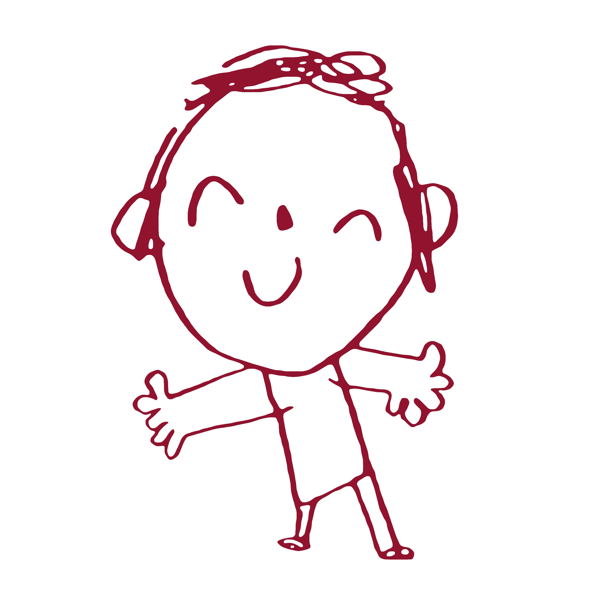

對於體操服優香，我的評價是四個字：好有感覺。
我主要想注重於兩點，來闡述我對於體操服優香的拙見：第一，我非常喜歡優香。優香的立繪雖然把優香作為好母親的一面展現了出來（安產型的臀部）。但是她這個頭髮，尤其是雙馬尾，看起來有點奇怪。但是這個羈絆劇情裡的優香，馬尾非常的自然，看上去比較長，真的好棒，好有感覺。這個泛紅的臉頰，迷離的眼神，和這個袖口與手套之間露出的白皙手腕，我就不多說了。第二，我非常喜歡體操服。這是在很久很久之前，在認識優香之前，完完全全的xp使然。然而優香她不僅穿體操服，她還紮單馬尾，她還穿外套，她竟然還不好好穿外套，她甚至在臉上貼星星（真的好可愛）。（倒吸一口涼氣）我的媽呀，這已經到了僅僅是看一眼都能讓人癲狂的程度。與其說體操服優香讓我很有感覺，不如說體操服優香就是為了我的xp量身定做的。拋開這一切因素，只看性格，優香也是數一數二的好女孩：公私分明，精明能幹；但是遇到不擅長的事情也會變得呆呆的。我想和優香一起養一個愛麗絲當女兒，所以想在這裡問一下大家，要買怎樣的枕頭才能做這樣的夢呢？優香是越看越可愛的，大家可以不必拘束于這機會上的小粗腿優香，大膽的發現這個又呆又努力的女孩真正的可愛之處。
夢開始的地方▼